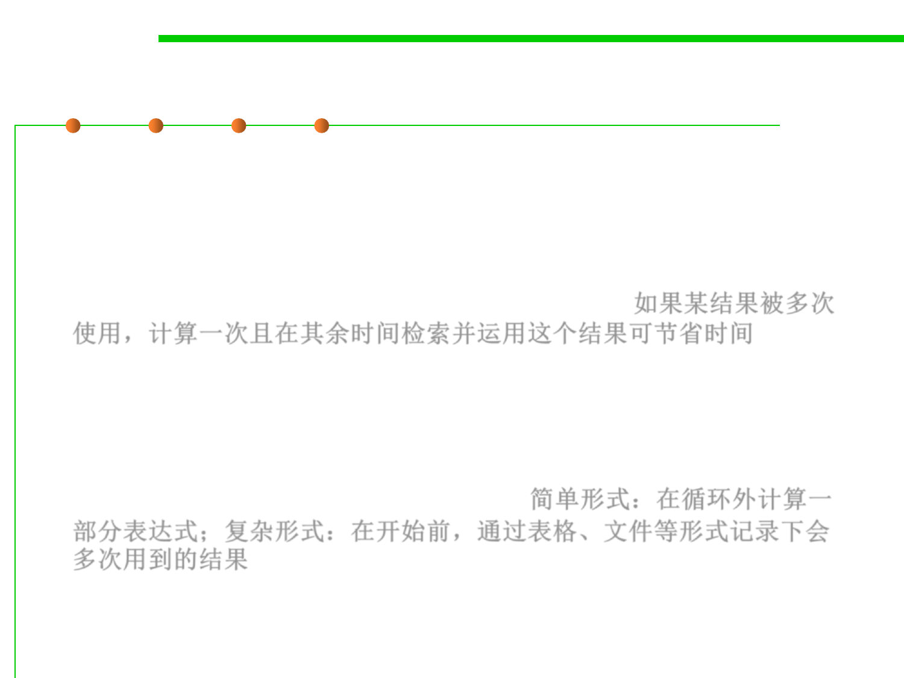

Precompute Results
8.3 Code Tuning for Performance Optimization
▪ A common low-level design decision is the choice of whether to
compute results on the fly or compute them once, save them, and
look them up as needed.
▪ If the results are used many times, it’s often cheaper to compute
them once and look them up the rest of the time. 如果某结果被多次
使用，计算一次且在其余时间检索并运用这个结果可节省时间
▪ At the simplest level, you might compute part of an expression
outside a loop rather than inside. At a more complicated level, you
might compute a lookup table once when program execution
begins, using it every time thereafter, or you might store results in
a data file or embed them in a program. 简单形式：在循环外计算一
部分表达式；复杂形式：在开始前，通过表格、文件等形式记录下会
多次用到的结果